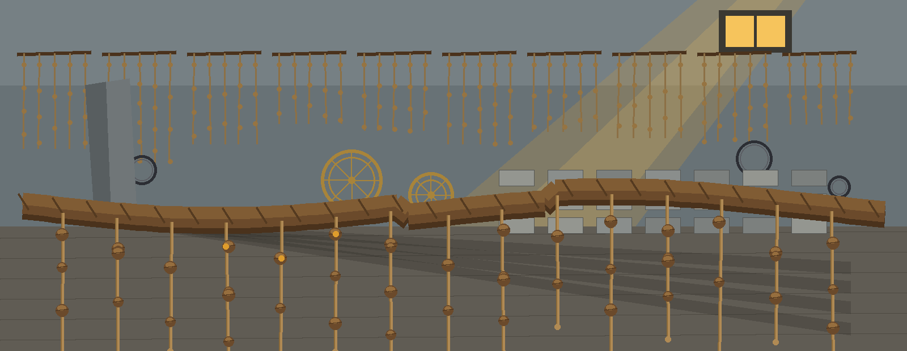
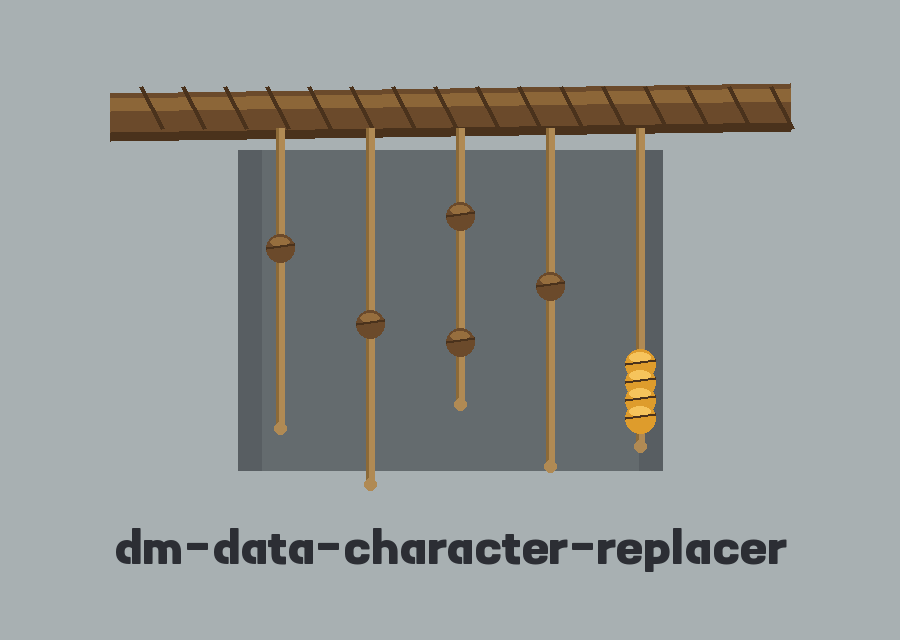
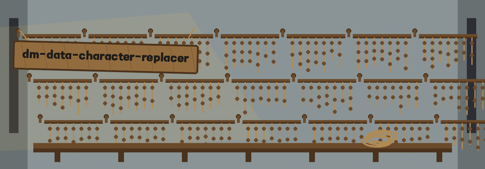
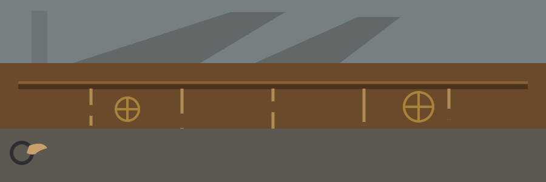

dm-data-character-replacer: The Inca Quipu Knot Records
dm-data-character-replacer: The Inca Quipu Knot Records names itself in that form throughout this page. The page is laid out as a cord ledger hung in sections, one plate per section, in sea grey lightened two steps, with panels in viking oak at low strength, headings in Tenada in iron, reading text in Alegreya Sans in near black, and amber held back for active markers and the one knot cluster motif in the hero above.



Character Set, as a Regular Expression Replacement Character
One Character In, One Character Out
First Match Unless Told Otherwise
The Default the Source Leaves Blank
Plate one: the swap
Picked characters inside a data field come out, and one picked replacement character goes in. The source illustration, retold in words, is digits inside a phone number field becoming the letter X. The tool offers targeted character sets and replacement strategies, and its closing sentence places it among tools that generate or mask sensitive data with realistic looking but meaningless values. Nothing from an actual field, on any actual record, appears anywhere on this page.
Plate two: the controls, hung one per row
Help: shows the help message and exits.
The character set to replace, written as a regular expression, defaulting to the digit pattern.
The replacement character, whose own default the source leaves unprinted.
Global replacement: every occurrence of a matching character moves. Without this control, only the first match moves.
Case ignoring during matching, flagged in the source as handy for letters.
Verbose logging, turned on by its control.
Secure processing, worded in the source as avoiding a print of the original input data if possible.
Every row holds placeholders only. The calling form the source supplies is the whole of it: an executable form followed by a bracketed params placeholder. No input file control, no output file control, and no worked run appear in the source, and no exit code is stated anywhere in it.
Plate three: where the source goes quiet
A caller who needs the replacement default cannot get it from this documentation, because that line halts mid sentence after the words Defaults to and names nothing. A caller who leans on secure processing gets only an if possible promise, and this site does not dress that promise up as a guarantee.
Install, corrected
git clone https://github.com/ShadowGuard-AI/dm-data-character-replacer
Correction: this line is corrected here. The README as printed names a different organisation in its clone line; the corrected line above names the organisation that owns the repository, hyphenated.
One line and nothing else: no package manager step, no build step, and no dependency list appears around it in the source.
Usage
./dm-data-character-replacer [params]
That bracketed placeholder is the whole calling form. Anything beyond it would be inference, and this page makes none.
Licence, on two pegs
Peg one holds the repository LICENSE file: MIT License terms, granted by a holder whose line is shaped, in order, as a full pen name, a parenthetical given name cut down to one initial, and an account handle. That shape is the whole of what this page says about the holder; the line is not reproduced and the initial is not spelled out. Peg two holds the short licence chapter at the foot of the README, which offers no terms, only a single copyright line. In the preserved record below that line names ShadowStrikeHQ, and the tally under the record points at that fault and leaves the line itself alone.
Guest dressing, flagged
The astrolabes, seal rings, cut stone pieces, and standing stone shadows in the pictures are borrowed dressing admitted where the theme volume places them. The cord, its pendants, and its knots are the true cast of this world, and the swap itself is substitution tallied by position, knot for character.
The preserved README record
 # dm-data-character-replacer Replaces specific characters in data fields with a specified replacement character (e.g., replacing all digits in a phone number with 'X'). Provides options for targeted character sets and replacement strategies. - Focused on Tools designed to generate or mask sensitive data with realistic-looking but meaningless values ## Install `git clone https://github.com/ShadowStrikeHQ/dm-data-character-replacer` ## Usage `./dm-data-character-replacer [params]` ## Parameters - `-h`: Show help message and exit - `-c`: The character set to replace (regular expression). Defaults to '\d' (digits). - `-r`: The replacement character. Defaults to - `-g`: Replace all occurences of the matching characters, otherwise only the first. - `-i`: Ignore case during character matching (useful for letters) - `-v`: Enable verbose logging. - `-s`: Enable secure processing that avoids printing the original input data if possible. ## License Copyright (c) ShadowStrikeHQ
Identity tally for the record above, counted by position: the clone line names ShadowStrikeHQ once, and the licence line at the foot names ShadowStrikeHQ once more, for a whole README count of ShadowStrikeHQ 2 times, ShadowGuard-AI 0 times, and ShadowGuardAI 0 times. The corrected install plate above is a repair hung beside the record; it does not enter the count, and inside the record both original spellings stay exactly where they were found.